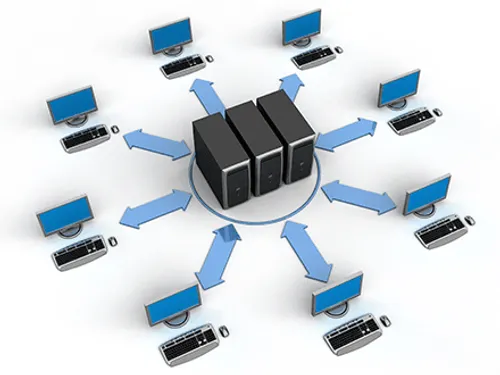

REDES
Configuração de redes
Instalação e configuração de roteadores, switches e redes locais.
Solicitar atendimentoAjudamos com Conectividade, Segurança e Suporte técnico
Oferecemos serviços especializados em instalação, configuração, manutenção e segurança de redes, garantindo conectividade e estabilidade para sua infraestrutura.

REDES
Instalação e configuração de roteadores, switches e redes locais.
Solicitar atendimentoSUPORTE
Diagnóstico e solução de falhas de conexão e equipamentos de rede.
Solicitar atendimentoSEGURANÇA
Configuração de firewall, controle de acesso e proteção da infraestrutura.
Solicitar atendimentoMONITORAMENTO
Acompanhamento da rede para identificar falhas e problemas de desempenho.
Solicitar atendimento